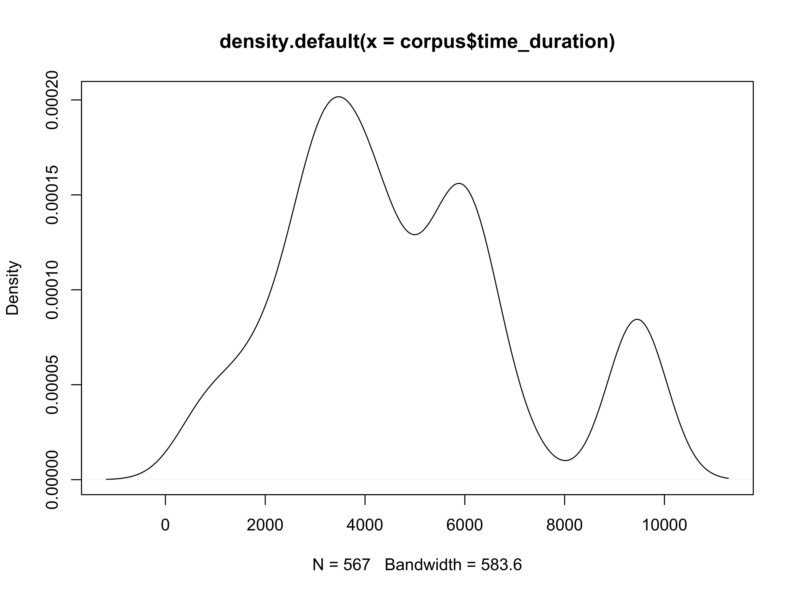

eafs <- dir(path = '~/github/test-corpus/', pattern = 'eaf$', full.names = TRUE)
corpus <- eafs %>% map(read_custom_eaf) %>% bind_rows()
corpus <- corpus %>%
mutate(time_duration = time_end - time_start) %>%
mutate(audio_file = str_replace(filename, 'eaf$', 'wav')) %>%
mutate(orth_trimmed = str_replace_all(orth, c('[:punct:]' = '',
'\\s+' = ' '))) %>%
filter(! participant == 'NTP-M-1986') %>% # just getting rid of myself
select(orth_trimmed, time_start, time_end, time_duration, everything())plot(density(corpus$time_duration))
library(exifr)
corpus %>% distinct(audio_file) %>%
pull(audio_file) %>%
map(~ exifr::read_exif(.x)) %>% bind_rows() %>%
rename(audio_file = SourceFile) %>%
select(BitsPerSample, Duration, FileType, NumChannels, everything())## # A tibble: 3 x 18
## BitsPerSample Duration FileType NumChannels
## <int> <dbl> <chr> <int>
## 1 16 21.51023 WAV 2
## 2 16 101.82523 WAV 2
## 3 16 90.70569 WAV 2
## # ... with 14 more variables: audio_file <chr>, ExifToolVersion <dbl>,
## # FileName <chr>, Directory <chr>, FileSize <int>, FileModifyDate <chr>,
## # FileAccessDate <chr>, FileInodeChangeDate <chr>,
## # FilePermissions <int>, FileTypeExtension <chr>, MIMEType <chr>,
## # Encoding <int>, SampleRate <int>, AvgBytesPerSec <int>library(glue)
corpus %>%
distinct(audio_file) %>%
pull(audio_file) %>%
walk(~ {
seewave::sox(glue("{.x} -c 1 {str_replace(.x, 'wav$', '-mono.wav')}"))
})cut_elan_ref <- function(audio_file, reference_id, start, duration){
if (dir.exists('~/github/test-corpus/reference_clips') == FALSE) {
dir.create('~/github/test-corpus/reference_clips')
}
seewave::sox(command = glue("{str_replace(audio_file, 'wav$', '-mono.wav')} ~/github/test-corpus/reference_clips/{reference_id}.wav trim {start / 1000} {duration / 1000}"))
}corpus %>% distinct(audio_file, ref, time_start, time_duration, orth_trimmed) %>%
split(.$ref) %>%
walk(., ~ cut_elan_ref(.x$audio_file, .x$ref, .x$time_start, .x$time_duration)) %>%
walk(., ~ write_lines(.x$orth_trimmed[1], path = glue::glue('~/github/test-corpus/reference_clips/', .$ref[1], '.txt')))library(emuR)
convert_txtCollection(dbName = 'test-corpus',
sourceDir = '~/github/test-corpus/reference_clips',
targetDir = '.',
txtExtension = '.txt',
mediaFileExtension = 'wav',
attributeDefinitionName = 'orth')
dbHandle = load_emuDB('test-corpus_emuDB', verbose = F)runBASwebservice_g2pForTokenization(handle = dbHandle,
transcriptionAttributeDefinitionName = 'orth', language = 'rus-RU',
orthoAttributeDefinitionName = 'ORT', resume = FALSE,
verbose = TRUE)
runBASwebservice_g2pForPronunciation(handle = dbHandle,
orthoAttributeDefinitionName = 'ORT',
language = 'und',
canoAttributeDefinitionName = 'KAN',
params = list(embed = 'maus', imap=RCurl::fileUpload("~/github/test-corpus/kpv-sampa.txt")),
resume = FALSE,
verbose = TRUE)
runBASwebservice_maus(handle = dbHandle,
canoAttributeDefinitionName = 'KAN',
language = 'rus-RU',
mausAttributeDefinitionName = 'MAUS',
chunkLevel = NULL,
turnChunkLevelIntoItemLevel = TRUE,
perspective = 'default',
resume = FALSE,
verbose = TRUE)
export_TextGridCollection(dbHandle, targetDir = '~/github/test-corpus/praat', attributeDefinitionNames = c('ORT', 'KAN', 'MAUS'))